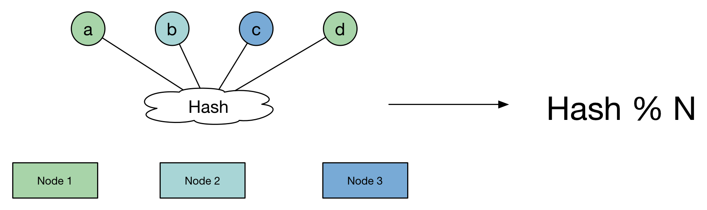

一致性hash
在分布式应用中，我们希望服务器能够分担整体框架的缓冲压力，希望存储请求能够均匀的分散在已有的服务器中，足够平均，也就能最大化的使用服务器，比如falcon的transfer模块，经过一致性哈希算法，对数据的发送目的地进行均匀分布后，有效进行存储，而其中的关键即是均匀，当然后面还会将会提到节点变化引发的映射变化。
解析
当看到这里的时候，可以联想一下Map，这和分布式里头的运用是很像的，map也是要讲究让数据均匀分布，以此来保证map操作时间都为O(1)。
可以想象，map的结构是一个哈希key后头挂一个链表，在数据均匀的挂在每一个哈希值上时，map时间才会是O(1)常量时间。这样理想的存储方式，才既不会浪费空间，也不会消耗时间。
鉴于此，假如我们有100台服务器作为服务节点nodes，将1000W个数据分布到这100台数据节点上，使用普通哈希算法进行计算，然后以服务节点取模，算出落到服务器节点上的数量。

大致代码（Go）：
1 | const ( |
均匀分布后，就需要考虑另一个显著的问题，例如在分布式场景中，有服务器节点掉线或增加节点后，哈希分布就会重新变化，原有的节点映射将发生变化，这是因为普通哈希算法依赖于节点的数量（node），当节点数量变化后，数据项也将发生变化。
代码：
1 | func main() { |
结果上可以看出，变化率极高，在分布式场景中，这显然是不适用的。
一致性哈希
维基百科：
需求
在使用n台缓存服务器时，一种常用的负载均衡方式是，对资源o的请求使用hash(o)=o mod n来映射到某一台缓存服务器。当增加或减少一台缓存服务器时这种方式可能会改变所有资源对应的hash值，也就是所有的缓存都失效了，这会使得缓存服务器大量集中地向原始内容服务器更新缓存。因此需要一致哈希算法来避免这样的问题。
一致哈希尽可能使同一个资源映射到同一台缓存服务器。这种方式要求增加一台缓存服务器时，新的服务器尽量分担存储其他所有服务器的缓存资源。减少一台缓存服务器时，其他所有服务器也可以尽量分担存储它的缓存资源。 一致哈希算法的主要思想是将每个缓存服务器与一个或多个哈希值域区间关联起来，其中区间边界通过计算缓存服务器对应的哈希值来决定。（定义区间的哈希函数不一定和计算缓存服务器哈希值的函数相同，但是两个函数的返回值的范围需要匹配。）如果一个缓存服务器被移除，则它所对应的区间会被并入到邻近的区间，其他的缓存服务器不需要任何改变。
一致性哈希算法解决的痛点，就是当node数发生变化时，尽可能减少数据迁移，减少数据变动。
1 | 具体原理： |
实现
一致哈希将每个对象映射到圆环边上的一个点，系统再将可用的节点机器映射到圆环的不同位置。
查找某个对象对应的机器时，需要用一致哈希算法计算得到对象对应圆环边上位置，沿着圆环边上查找直到遇到某个节点机器，这台机器即为对象应该保存的位置。
当删除一台节点机器时，这台机器上保存的所有对象都要移动到下一台机器。添加一台机器到圆环边上某个点时，这个点的下一台机器需要将这个节点前对应的对象移动到新机器上。
更改对象在节点机器上的分布可以通过调整节点机器的位置来实现。
服务器三个节点：node 1~3，四个数据，a、b、c、d。
将服务器节点经过哈希计算后，写入哈希环中。数据在决定被写入服务器时，由数据经过哈希计算后，其与服务器节点的值经过比较（找到第一个大于其哈希值的服务器节点），得到其哈希值就可以将哈希值发送给该服务器节点。
若该服务器节点失效，则需要再向下遍历出一个大于数据哈希值的节点，将数据重新发送给该服务器节点即可，而其他服务器节点数据不受影响，也就摆脱了第一种普通哈希算法对服务器节点node的依赖。

直接上代码：
1 | func main() { |
可以看到实际结果和理论上需要达到的效果有所不同，甚至区别相差很大，数据本身的hash值未发生变化，但服务器节点本身就在环上分布不均匀，导致了每个节点实际占据环上的区间大小就不一样 ，这种情况下，会出现某一节点可能有着巨大的负载。

该现象被称作Hash环倾斜问题，于是针对这个问题引出了下一个概念。
虚拟节点
针对上述的问题，由于服务器节点分布不均匀，导致数据分布不均匀。而节点分布不均，可以看做是环上节点填充不够充分。当我们将环都填充满时，近似的可以看做这样的分布式均匀的，数据可以均匀的分布在每一个节点上。
根据这个想法，引入虚拟节点的操作。那么我们可以以现有节点为基数来增加虚节点，对每一个节点进行扩充。这样就既保证了在节点变化时，尽可能小的影响数据分布的变化，而同时又保证了数据分布的均匀。也就是靠增加“节点数量”加强管辖区间的均匀。

通过代码可以实际看到结果，均匀度相较于之前提升了不少。
1 | Ave: 100000 |
哈希的优化
这个优化不是我做的，我是直接使用别人的结果，做了后期的验证，在文章Falcon存储做过的那些优化，博主在使用原仓库的哈希函数进行部署falcon，但实际使用中还是出现了流量不均的问题，于是对哈希的各类算法实际表现进行了评估，得出了在哈希函数算法的速度与均匀性上，各类算法的差距是明显的，我在之后的实际验证中也验证了博主的观点，所以在看到文章后，我是直接对falcon这出位置进行了改造（falcon仓库现在还是使用的crc32）。
例如：
1 | MD5 哈希： |
对比的结果：
1 | murmur32 > fnv1 > fnv1a > xxHash > crc32 |
参考：
维基百科的解释：一致哈希
一致性哈希Go实现代码和falcon使用的代码
本文标题：一致性hash
文章作者：小师
发布时间：2019-07-01
最后更新：2022-05-04
原始链接：chunlife.top/2019/07/01/一致性hash/
版权声明：本站所有文章均采用知识共享署名4.0国际许可协议进行许可